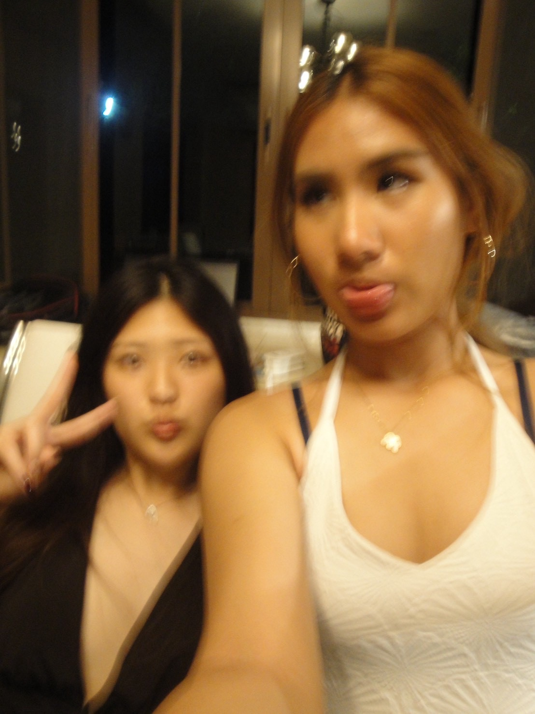
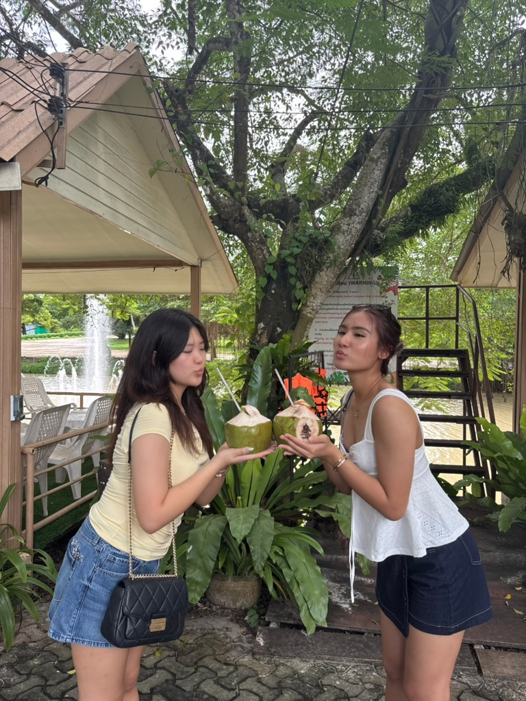
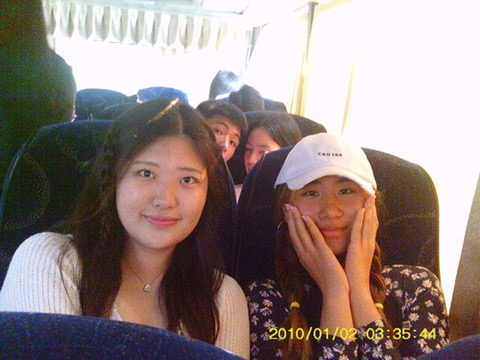

Dear Ash,
Happy Birthday Love💕
Ash, I know it was quite fast how we have known each other, maybe for only 2-3 years, but it feels like I have known you for 10 years.
Since I got to know you, you have taught me a lot of things, and ofc you wouldn't know. But I learnt that to appreciate the moment,
You have to be in the moment. Every time I'm with you, I always see you in the present moment, where you enjoy every bit of current experiences.
I felt like I don't have to think about the past or the future when I'm with you, its the current moment that we try our best to make the best out of it.
Ash, you were the sunshine in my life; your high-pitched and contagious laugh while slapping me always made me know that you were happy.
Which I'm happy for because it also made me laugh. I know you had been through a tough moment this year with college, but trust me; We're so proud of you
as well as your parents. I have never seen anyone dedicated to writing an essay in such a large amount before, but it's the best for your future.
You being down to almost every fun activity is also another aspect of you that I admire, while I would rethink and plan out things. The ability
to agree to gain more experience made me admire you very much. Thank you for being at my lowest point, when I lost all my confidence and felt burned out in sports,
you were there, cheering me up. I can't imagine how I would be in the last few months without your encouraging words. With less than two months together,
I'll try my best to make the most memories left with you and the rest of our friends. I hope we would grewn even tighter in the next few months before
we walk on different paths. Always know that I will always be here for you, even distance couldn't take our freindship apart. I know you would do
amazing in college while enjoying being back in the US. Lastly, thank you for always being there for me, making me laugh, and being the best person ever.
I love you sooo much 💖✨


